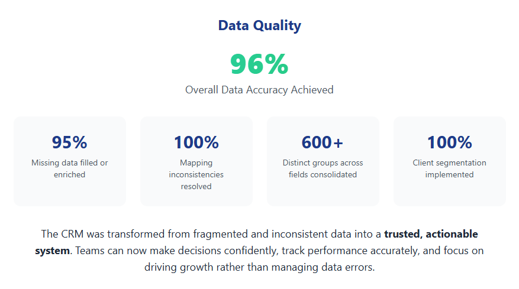
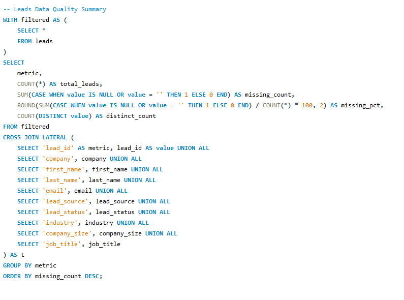
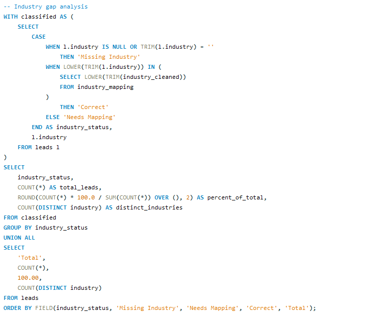
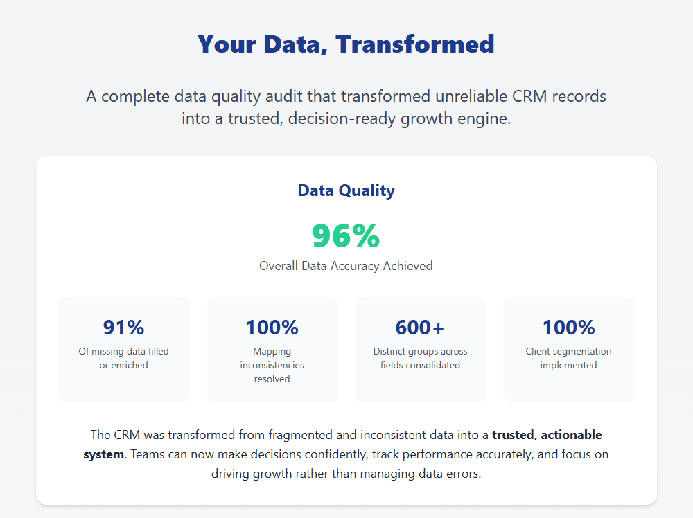
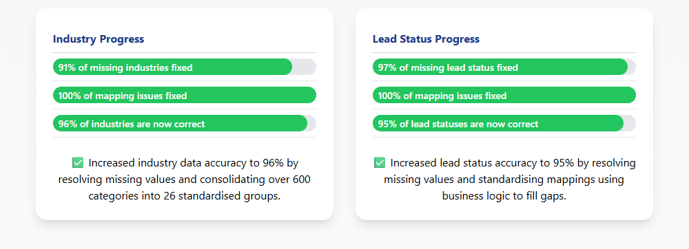

I led a SQL-driven CRM data rescue initiative that transformed fragmented, unreliable records into a structured, ready intelligence system supporting sales growth and marketing performance.
This project didn’t just clean data, it unlocked the full potential of the CRM.

CRM reporting relied on data that was incomplete, inconsistent, and difficult to trust for decision-making.
The CRM had significant gaps that affected reporting and decision-making:
Without reliable data, it was difficult to measure lead conversion, segment accounts, track revenue, or identify at-risk clients. Large gaps in key information, such as Industry, Company Size, and activity frequency, prevented the business from learning from the data and using it to guide strategy.
A SQL-driven data quality and enrichment workflow was implemented to clean, standardise, and enhance CRM data.
Check data completeness:
Fill missing data:
Prepare client and account analysis:
Monitor lead conversion:
SQL queries were used to audit CRM data completeness and industry mapping coverage before enrichment.


The cleaned and enriched CRM data enabled more reliable reporting and actionable insight across sales and marketing.
Overall, the project transformed unreliable CRM data into a trusted analytical foundation, enabling 100% data-driven decisions and directly supporting improved lead conversion, account management, and revenue growth.


Note: All metrics presented are based on professional experience and have been anonymised, aggregated, or proportionally adjusted to ensure compliance with confidentiality and data protection standards.

A Python application that classifies clients using large-scale data and custom business logic.
85% faster client data processing

Interactive dashboard visualising key sales KPIs, trends, and insights to support strategic decision-making.
MySQL • Zoho • Power BI

A Python + Streamlit application that automates UTM URL creation across channels and tactics.
90% faster URL generation